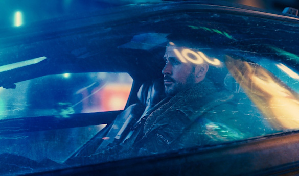
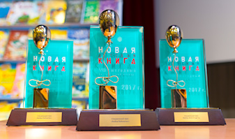

Новости |
||
|  |
вчера в 19:30
В кино выходит «Бегущий по лезвию 2049» История об андроидах и овцах Филипа Дика получила необычное продолжение. Уже завтра состоится премьера, которой с нетерпением ждут все любители научной фантастики – в кинотеатрах начинается показ фильма «Бегущий по лезвию 2049». Пока весь мир покупает попкорн и рассаживается в зрительных залах, вспомним о первой экранизации и, конечно, о культовом романе Филипа Дика. |
|
|  | ||
|
вчера в 20:54 Марио Варгас Льоса получит миллион за «Скромного героя» Премия «Ясная Поляна» выбрала победителя в номинации «Иностранная литература». |
29.09 Итоги «Новой детской книги»: из 5 тысяч книжек для детей выбрали 3 самые лучшие Совсем скоро рукописи напечатают и мы сможем их прочесть. |
27.09 10 великих книг, которые когда-либо запрещали В США идёт Неделя запрещённых книг: вспоминаем самые смешные попытки не дать нам почитать. |